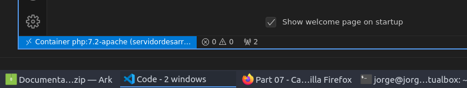

En esta práctica trabajaremos con contenedores e imagenes. Y haremos una pequeñas demostraciones de qué podemos hacer con ellos.
El objetivo de esta memoria es aprender a utilizar contenedores y hacer algunas cosas que podemos hacer con ellos.
Parte 2
Ejecuto el comando docker run hello-world

Parte 3
Ejecuto el comando docker run -it -p 8080:80 --name LAMP ubuntu /bin/bash Iniciando un nuevo contenedor, manteniendo la entrada estándar (stdin) con -i incluso si no estás conectado, y Asignando un terminal -TTY, permitiendo la interacción con el contenedor a través de la línea de comandos con -t. -p 8080:80 mapeo el puerto 8080 del host al puerto 80 del contenedor. Le asigno el nombre LAMP al contenedor. Especifico la imagen que utilizare, Ubuntu. Especifico la Shell /bin/bash del contenedor. Después de actualizar los paquetes, ejecutamos el comando apt install wordpress php libapache2-mod-php mysql-server, para instalar wordpress. Creo el fichero de configuración en "/etc/apache2/sites-available/wordpress.conf. Accedo a mysql y creo una base de datos mediante la terminal.
Parte 4
Utilizo el Dockerfile ya preparado por el profesor y ejecuto el comando docker build -t sampledocker ./ El comando me permite crear una nueva imagen, y con -t etiquetarla con el nombre "sampledocker" Luego ejecuto el siguiente comando docker run -dp 3000:3000 sampledocker. Creo un contenedor que se ejecutará en segundo plano con -d, y mapeo los puertos con -p.
Enlace de mi docker hub: https://hub.docker.com/repository/docker/jorge598/practica_docker_hub/general
Parte 5
Creo una red que compartirán los contenedores, con el nombre redwp, con el comando docker network create redwp y mapeo mediante "binding mount" el directorio local "/home/jorge/mysqldata" con "/var/lib/mysql". Después con el comando docker run --name nuestrowp --network redwp -p 8080:80 -d wordpress creamos el contenedor nuestrowp y lo metemos en redwp.

Parte 6
Intento descargar el fichero docker-compose.yml con el comando docker-compose up -d (-d para ejecutarlo en segundo plano). Sin embargo me salta un error, en el cual sólo acepta la versión 2.2 o 3.3, así que cambio la versión del documento de 3.9 a 3.3

Parte 7
Instalo visual studio en la MV. Instalo las extensiones de "Docker" y "Remote-Containers" Ejecuto el siguiente comando docker run -d --name servidordesarrollo -p 8080:80 php: 7.2-apache Después, abrimos visual studio y accedemos a las utilidades del docker. Seleccionamos el contenedor que queramos asociar con visual studio, y después la opción "Attach Visual Studio Code".


He encontrado algunos problemas menores respecto algunos archivos respecto a actualizaciones desfasadas, pero todos fueron solucionados.
Una práctica muy interesante y muy importante. Espero poder seguir trabajando con dockers para así seguir aprendiendo más sobre ello.